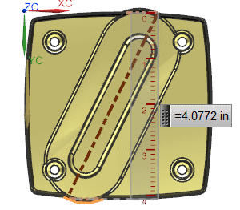
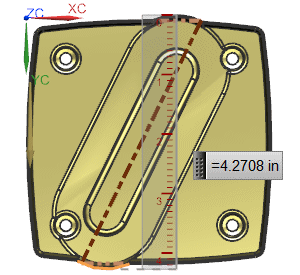
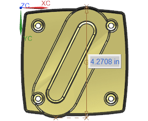

In the Measure Distance dialog box, in the Measurement group, from the Distance list, select Maximum.

The three lines are to help you see how the maximum projected distance is calculated. The literal maximum distance between the two selected arcs (the dark centerline) is calculated, and then projected onto the specified vector,
From the Distance list, select Maximum Clearance.

Notice how this is measured. It is the maximum distance between the two selected edges, measured along the specified vector.
In the Results Display group, from the Annotation list, select Show Dimension, and click OK.
Hide the three lines.

As before, it is the maximum distance between the two selected edges, measured along the specified vector.
Close the part.